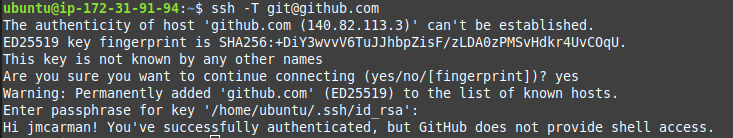
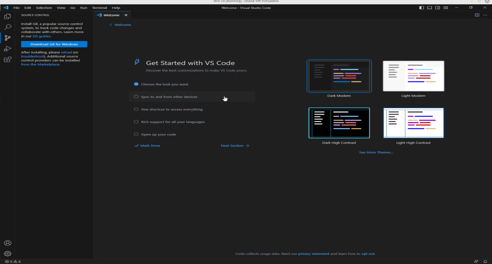
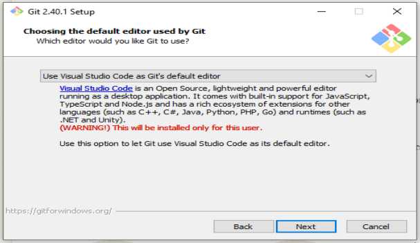

Lab 4 - Introduction to HTML5
Overview
This week's lab will cover the following:
- Configuring your development environment.
- Identifing the basic elements of a simple web page.
- Describing HTML syntax, tags, attributes and values.
- Entering and Formatting Text.
- Previewing Site Content in a Browser.
- Posting a web page to your web server.
Creating a GitHub account
Navigate to github.com and create an account (if you don't already have one) using your email address. In the next steps you will be accessing GitHub classroom. You will also be using git with Visual Studio Code to push your code (web pages) to github.com, where you will then pull them into your Apache web server. These tools are all free, open source, and commonly used in web development.
Introduction to Git & GitHub
Use the following link to set up your access to the Introduction to Git & Github materials (provided by GitHub Classroom). Read through and everything before you continue. The purpose of this exercise is to familiarize yourself with Git & Github. To submit this, edit the instructions (README.md) by clicking on the pencil in the top right corner. You may wish to complete any of the additional items under Optional next steps.
Configuring SSH keys in AWS & GitHub
You're going to want to configure secure remote access between your GitHub repository and your Ubuntu Server instance in AWS. Fortunately, you have the perfect tool available at your fingertips. You've already used this somewhat. SSH key pairs.
Start your www instance in the AWS Learner Lab, and connect to it using SSH. Once you have logged in, issue the following command to generate a 4096 bit RSA keypair for your GitHub account's email address (replace username@email.com with your email address).
ssh-keygen -t rsa -b 4096 -C username@email.com
Accept the defaults and provide a secure passphrase (twice). Your keypair will be generated, with the public key saved as id_rsa.pub in .ssh (a hidden directory) in your home directory.
Before copying this into your GitHub account settings, you'll want to test it. Issue the following command to test it:
ssh -T git@github.com
You should see the following output:
Issue the following command view your public key.
cat .ssh/id_rsa.pub
- With your mouse, select the contents of the cat command (beginning with ssh-rsa and ending with username@email.com) and copy it.
- Access the SSH and GPG keys settings in github.com (you will be prompted to login if you haven't already.
- Click New SSH key, give it an appropriate title and paste in your public key (see following screenshot).
You will use this later in the lab. Next, you will set up your development tools (Visual Studio Code or VS Code).
Downloading Visual Studio Code (VS Code)
The College PCs should all have Visual Studio Code and Git installed on them. You will be using both of these tools to develop your website. If you are working from home or your laptop however, you will want to install and configure both of these. If you are working on a PC at Centennial College, skip to the next section (configuring Visual Studio Code). You can download and install Visual Studio Code in the following ways:
- From the Visual Studio Code website.
- In Windows - From the Microsoft Store: search for vscode and click Install.
The Visual Studio Code website has installers for Windows, Linux (Debian and Red Hat based) and macOS.
Configuring Visual Studio Code & Git
Visual Studio Code (VS Code) is a powerful editor designed for programming and scripting. It is open source and available for free. It also works cross-platform, meaning you can install it in Windows, macOS or Linux. Additionally, it has source control tools for git and github built-in. Launch Visual Studio Code, click on Source Control on the left and click the Download Git link unique to your operating system (see the following screenshot).
When you're installing Git, accept the defaults except for Choosing the default text edtior used by Git. Select Use Visual Studio Code as Git's default editor from the dropdown (screenshot below).
Once the installation is finished you will have to close and re-open VS Code to access Git.
Creating your Github Repo for your Labs
Use the following link to set up your Labs repository. You will be using this for the rest of the Labs in the course (including this one), and for Assignment 1.
Cloning Your Repository in VS Code
- In order to clone your repository in VS Code, you need to first sign in with github. Open VS Code and click the profile icon in the bottom left. It is located directly above the settings (gear) icon. Sign in with GitHub.
- Next, click on Source Control and click Clone Repository. Select Clone from GitHub in the url bar, and select the CNET204/labs-assignment-1-youruser repository.
- You will now select the local folder to be used as your Repository Destination. If you are working on a PC at the college, set this to your H drive. If you are working from your own PC, set this to a folder of your choosing (but remember where it is). The advantage to using your H drive on a college PC, is it is automatically mounted on any PC you log into. Additionally, you can access your H drive through myCentennial.
You may be prompted to sign in. Accept any other prompts, including opening the repository locally and select:Yes, I trust the authors.
Creating your first web page
Before creating your first web page, it's best to lay out the required structural tags (an example follows). You can then fill in the rest of the data using this simple template. Remember, a web page is everything that exists between the opening and closing html tags (<html> and </html> respectively). It consists of two main parts:
- The head, consisting of everything between the head tags (<head> and </head> respectively). This section contains information about the document, and won't appear on the page itself.
- The body, consisting of everything between the body tags (<body> and </body>). This section contains the document itself, everything in here will appear as your web page.
<html> <head> </head> <body> </body> </html>
Click on new file (in the welcome screen) and create a new file named index.html. Save it in your local repository folder and fill in the structure using the above sample. This is the file you'll be editing for the rest of the lab.
The document type declaration
Add the doctype
The document type declaration tells the browser what type of document to expect. There are many different doctypes, however for this course we will be using the one for HTML5. Add the following to your webpage above the opening HTML tag (the doctype declaration must be the first thing in your document).
<!DOCTYPE html>
W3Schools has some useful information on the different doctypes and their uses.
Filling in the head
Add a title
Add the title of "First Page" (without the quotes) to the header section of your document.
<title>First Page</title>
Add some meta tags
Meta tags provide additional information about our page. These include what character encoding you're using, and data used by search engines to index your page.
Using the meta tag, define the character set as "UTF-8" (Unicode). This tag defines metadata about the document, and can contain many attributes. We will use several of them over the duration of this course.
<meta charset="utf-8">
Use the meta tag to add author information to your web page (with the content of your name). An example follows.
<meta name="author" content="Linus Torvalds">
The header can contain many other things such as embedded or external links to CSS or JavaScript, which we will visit later.
Filling in the body
Add a heading
Headings when done properly should be used in number of importance, with 1 being most important and 2-6 used for sub-headings in order of descending importance.
Insert the follwing using an H1 tag:
<h1>Your Name's first web page</h1>
Add a paragraph
Using the paragraph tag (<p> to open and </p> to close), add a paragraph below your heading about what you hope to learn from this course.
Comments
The comment tag can be extremely useful when you're first learning HTML, or when you have a large block of code and want to clearly define where it begins and ends. Comments can make your code easier to read and understand, either by someone else or yourself after quite a bit of time has passed. Comments are not used as frequently in HTML as they are in other languages. To add a comment you require an opening (<!--) and closing (-->) tag. A sample follows below, please feel free to include comments in your labs whenever you encounter something that may be useful to remembering what you've learned later.
<!-- This is a comment, it's contents will only appear when you view the page source through the browser. Comments in HTML can span multiple lines. This is not always true of comments in a other languages, and some can even have a variety of methods for designating a comment -->
To do:
Using what you learned about comments above, add a comment indicating your name and student number as the first line of the body.
Setting your git username and email
Before you can push your commit to GitHub, you need to set your username and email (to be included in the commit) from the command line within VS Code. To do this:
- Click on Terminal (in the menu bar across the top of VS Code).
- Click New Terminal.
Then issue the following two commands:
git config user.name "Your Name" git config user.email "youremail@my.centennialcollege.ca"If you are using your personal computer, you may include the --global option to set these semi-permanently.
Making your first commit
Your page is done! You can now commit it to your github repository. To do this:
- Click on source control (on the left side of the screen).
- Click the three dots at the top of the pane.
- Click Changes and select Stage All Changes.
- Then click Commit.
- Enter a commit message (a short message describing what you have changed) and click on the check mark in the upper right corner.
- Click save when prompted.
- Click Sync Changes at the top of your Source Control pane, and agree to any prompts.
You've made your first commit! You will be doing this many times over the course of the semester. It will get easier with repetition.
Cloning your repository in your Apache server
Accessing your index page through a web browser
Completing the Lab
To view your page, use the following URL (substituting your information where appropriate). studentweb.cencol.ca/firstpartofemail
Your page should look similar to the following output. If it does not, go back and complete whatever you've missed.

Upon completion of this lab you should have a simple web page using several tags we talked about in our first lecture. Your page should validate using the w3schools html validator. The following questions are for furthering your knowledge only, and may appear on quizzes or tests at any time later in this course.
Exploration Questions
- What does html stand for?
- What are the two main parts of a web page?
- What sort of things appear in the header? Which two did we use in this assignment?
- What sort of things appear in the body? Which two did we use in this assignment?
- What is the range of heading tags? Which is the biggest? The smallest?
- How do you access your assignments (on the web server) in the browser?